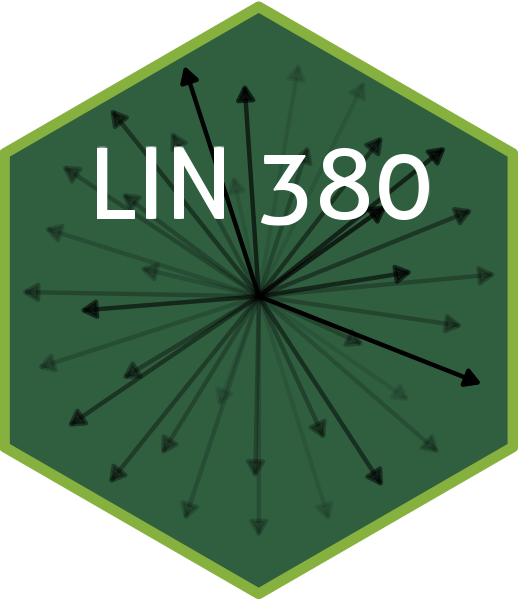

Syllabus
LIN 380/680: Quantitative Text Analysis for Linguistics
Instructor
Name: Dr. Jerid Francom
Pronouns: he/him/his
Email: francojc@wfu.edu
Office: Greene Hall 550
Appointments:
Course
Description
Are you curious about how to use technology to unlock hidden insights from text? Do you want to become a skilled researcher who can analyze textual data in a way that is rigorous, reproducible, and insightful? In this course, you will learn how to harness the power of computational tools to explore and interpret text in a way that supports meaningful research questions in Linguistics and language science.

Throughout the course, you will gain valuable skills in data analysis and interpretation, research design and implementation, programming, and collaboration. You will learn how to collect, organize, and analyze textual data in a way that ensures your findings are valid, reliable, and impactful. You will also gain hands-on experience with the R programming language, a powerful tool for conducting text analysis and automating data analysis processes.
By the end of the course, you will be able to design and apply appropriate research designs to address research questions based on textual data, implement text analysis techniques using computational tools, and communicate your research findings effectively through written reports and oral presentations. You will also be able to collaborate with your peers and the research community through publicly sharing and implementing reproducible research projects.
Join us for an exciting journey into the world of quantitative text analysis and unlock new insights into language, culture, and society!
Learning outcomes
By the end of this course you will be able to:
A. Identify, interpret and evaluate data analysis procedures and results
- Identify the impact of research decisions (data collection, organization, and analysis) on research findings.
- Interpret, assess, and contextualize the analysis of textual data to support research questions.
- Evaluate the validity and reliability of findings based on textual data.
B. Design, implement, and communicate research
- Design and apply appropriate research designs to address research questions related to language science.
- Implement text analysis techniques using computational tools to derive insights from textual data.
- Communicate research findings effectively through written reports and oral presentations.
C. Apply programmatic strategies to develop and collaborate on reproducible research projects
- Conduct text analysis and automate text analysis processes using the R programming language.
- Develop a detailed protocol that clearly outlines the research question, methodology, and analysis plan including documentation of the data sources, the sampling strategy, and the statistical analysis which align with reproducible research practices.
- Collaborate with peers and the research community through publicly sharing and implementing reproducible research projects.
Resources
- Francom, J (forthcoming). An Introduction to Quantitative Text Analysis for Linguistics: Reproducible Research using R. Routledge Press.
- GitHub: A free account (optional, sign up for the Student Developer Pack).
- Hypothes.is: A free account.
Prerequisites
This course takes a pedagogical approach which assumes no prior experience with statistics or programming, making it an accessible resource for novices beginning their exploration of quantitative text analysis methods. However, it is recommended that students have some familiarity with linguistics and/or language science research and research methods.
Approach
Building community
Building a community of learners is at the heart of enriching courses. It is key to keep in mind that each one of us is intrinsically motivated to know more about the world –that’s why we are all here! The experience of learning, however solitary it may seem at times, is best achieved in collaboration with others on their educational journey. Each of us brings important and valuable life experiences and academic knowledge and interests that are vital elements to making our class exceptional. Don’t check yourself at the classroom door! Engage, reflect, share, and discuss. Take risks, ask questions, and let’s embark on this intellectual journey together.
Transparency and responsibility
In my view, any course is not an island to itself. In an educational journey, a course provides you opportunities to grow both in learning content and the meta-process of learning how to learn. I will approach this course in precisely this way: I am more concerned with process than product. In this course (and in all courses) the material will prove challenging at times. This is a good thing. You will learn a lot, but you likely will not “learn it all” –I’m still learning! Learning is as much about success as it is trial and error. I will highly value trial as it provides an opportunity to err and learn. As part of this process, I will ask you to reflect on your process –when you seek support and how you find it. Your responsibility is to own your learning, collaborate with peers, seek and discover, and contribute to the learning of your peers (as well as mine). My responsibility is to provide the scaffolding and guidance to get you started on (or rather, continue) your journey.
Diversity & inclusion
I am committed to developing and supporting an ongoing environment that serves students from all diverse backgrounds and where diversity is viewed as a resource, strength, and benefit to our learning community. It is my goal to present materials and provide options for activities that are respectful to gender, sexuality, disability, age, socioeconomic status, ethnicity, race, and culture. Despite my best efforts, there may still be ways to improve the effectiveness of this course for you personally or for other students or student groups. Your suggestions for improvement are encouraged and appreciated.
Flexibility
I start this semester by acknowledging the social, political, and medical challenges that all of us face. I recognize that some of you are more impacted than others and that many of you may be learning from a place of anxiety, uncertainty, and trauma. I will stay cognizant of this throughout the semester, especially as I make teaching decisions. If there are ways I can make your learning experience better, please let me know.
Learning program
The course is grouped into five learning modules: (1) Orientation, (2) Foundations, (3) Preparation, (4) Analysis, and (5) Communication. The goal of each module is to build your conceptual knowledge and practical programming skills towards developing an original text analysis project prospectus/ final project which will showcase your knowledge and skills with a tangible, shareable, and reproducible research product.
The opening of each module will be signaled by the seedling icon (🌱). Each module targets a set of essential questions. Each of these modules in turn is composed of a series of daily activities that will guide us through topics that will help us address each of these essential questions. Days signaled by a water drop icon (💧) will include learning materials and group and individual activities to build our skills and knowledge on a particular conceptual topic. Days signaled by a branch icon (🌿) will include learning materials geared towards the practical application of conceptual knowledge through programming demonstrations and lab activities. Days signaled by a tree icon (🌳) are dedicated to project development activities.
Assessment
In line with my view that learning is a process, not a product, individual learning activities will be assessed through qualitative feedback, peer review, and self-assessment –but will not be assigned a grade by the instructor. Instead, you will be asked to provide a self-assessment of your learning progress periodically during the semester and a final process letter at the end of classes. As a final grade is an institutional requirement, during the final examination period I will meet with students individually to critically assess their learning progress (including self-assessments and a process letter) and determine an appropriate final course grade.
Module-based components
Engagement discussions
These discussions will ask you to reflect on your preliminary reactions to the learning materials (textbook and recipes) and collaborate with your peers to establish, clarify, and discover new connections.
Expansion activities
These will be a series of interactive coding (‘swirl’) and lab activities that aim to employ your conceptual knowledge and develop your R programming skills.
Project components
Project goals
You’ll develop a research prospectus (and final project) to demonstrate your skills in quantitative text analysis and its application to language science. This project aligns with the course’s learning outcomes, providing a chance to showcase your abilities in data analysis, research design, communication, and collaboration.
The project aligns with the course’s learning outcomes in the following ways:
- A: Identify, interpret, and evaluate data analysis procedures and results
In the Research statement and Data preparation and analysis steps, you’ll show how research decisions impact findings, interpret textual data analysis to support your questions, and assess the potential of your results to contribute to the field. - B: Design, implement, and communicate research
Your Research statement and Data preparation and analysis steps will outline your research design and how you plan to use computational tools for text analysis. The Communication step will detail how you’ll share your findings through reports, presentations, and reproducible research practices. - C: Apply programmatic strategies to develop and collaborate on reproducible research projects
You’ll demonstrate using R for text analysis and detail your methodology (Data preparation and analysis steps) for reproducible research. Your Communication plan will also include strategies for collaborating and sharing your prospectus with peers and the research community.
By completing this project, you’ll show your ability to apply quantitative text analysis to language science research, design robust studies, and communicate your findings effectively. You’ll also gain experience in using computational tools for reproducible research, a valuable skill for future research and professional work.
Project steps
Each step is designed to help you build a research prospectus that outlines a viable research plan that is reproducible and transparent.
Note that the project steps are iterative and you will likely revisit and refine your research question, data preparation, and analysis methods as you progress through the project.
The steps are:
- Identify a topic or area of interest within Linguistics and language science that you are passionate about.
- Begin to explore the literature in the area to understand the current state of research.
- Explore why this topic is important and what potential insights or contributions your research could make.
- Continue to refine your interest in a more specific area gathering and evaluating the literature
- Identify perceived gaps and potential areas of contribution.
- Define a research question or hypothesis.
- Outline the objectives of your research and the expected impact on the field or area.
- Describe the sources of your data and the rationale for their selection.
- Discuss the steps you will take to acquire and organize the data in a tidy, tabular dataset.
- Explain any techniques you will use to enhance and enrich the quality of the dataset in preparation for analysis.
- Mention any computational tools (e.g. R packages) you will use to prepare the data for analysis.
- Describe the descriptive diagnostics and exploratory techniques you plan to use to verify and better understand the dataset.
- Describe the analytical techniques you plan to use to answer your research question and explain your choices.
- Mention any computational tools (e.g., R packages) you will use for analysis.
- Outline the structure of a report and presentation, including sections on rationale, research question, methodology, results, and discussion.
- Prepare to communicate the potential significance of your planned research to non-experts in an in-class presentation.
- Prepare and share a computational environment that scaffolds your planned research.
The project steps will be used to scaffold the research prospectus. The prospectus will include the following sections:
| Section | Description |
|---|---|
| Title page | Includes the title of the prospectus, student’s name, course name, and date |
| Abstract | A brief summary of the research question, methods, and potential contributions of the study |
| Introduction | Introduces the topic of interest, its relevance, and the specific research question or hypothesis |
| Literature review | Summarizes previous research related to the topic and identifies gaps that the current study aims to address. |
| Data preparation methods | Data acquisition, data organization, and data enrichment process |
| Data analysis methods | Feature selection and engineering, analysis techniques, and evaluation process |
| Expected results | Hypothesized findings based on the research question and analysis methods |
| Communication plan | Reporting, presentation, reproducible research |
| Conclusion | Summary of the research proposal and its potential impact on the field of Linguistics and language science |
| References | List of sources cited |
The research prospectus will be developed iteratively throughout the course, with each step contributing to the final prospectus document.
The final project is a demonstration of the student’s ability to bring to fruition a text analysis research project of their own design and implementation. In addition to the project prospectus, the final project will carry out the research plan outlined in the prospectus and include a written report communicating the findings.
If you choose to complete the final project, contact the instructor to discuss your research plan and receive guidance on the project’s implementation at the outset!
For reference, in addition to the prospectus, the final project will demonstrate your ability to:
- Implement the research plan outlined in the prospectus.
- Communicate the findings of the research through a written report and oral presentation.
- Share the research project and its computational environment with the research community.
Policies
Professionalism
We abide by the WFU Honor System in this course; academic dishonesty is not tolerated and will be handled according to the policies in the student handbook.
Accommodations
Wake Forest University provides reasonable accommodations to students with disabilities. If you are in need of an accommodation, then please contact me privately as early in the term as possible. Retroactive accommodations will not be provided. Students requiring accommodations must also consult the Center for Learning, Access, and Student Success (118 Reynolda Hall, 336-758-5929).